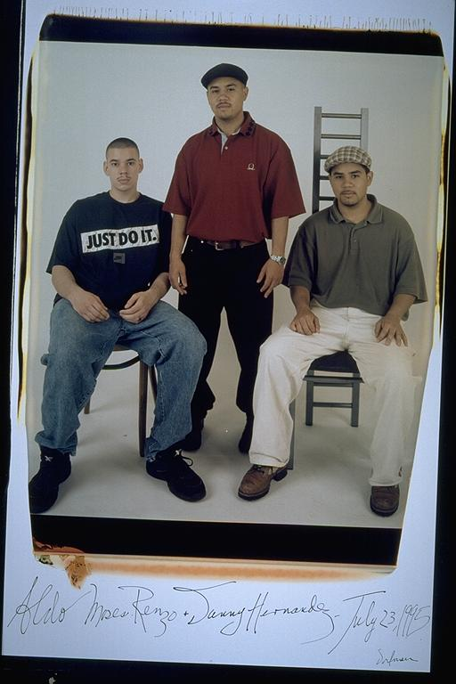

Pals: Boys Who Grew Up Together
elsadorfman.com/pals
Eugene: The BBC:
I'll always rep the BBC to the day I die. Aldo's brothers Danny & Renzo, Sean, Taha, Louis, Marco, Emerson, & Jabula, Casey, Isaac, Chad, Malcolm and me made up an elite group of men. If it were not for Danny & Renzo, Taha and Louis, neither Aldo or I would have gotten into college or been so successful on our college applications.
Aldo: Danny and Renzo are my stepbrothers. As kids it was so great to hang out with them, wrestle, play with action figures. I never had anyone to do that with that with at my mom's. My sister was too old, my mom was too busy. So, we've been close ever since we were little, and we still hang out these days. Danny, on the right, has two children now and lives in New York.

elsad@comcast.net